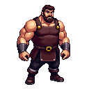
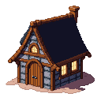

O NOME DO VENTO
A Crônica do Matador do Rei: Primeiro Dia
Autor: Patrick Rothfuss
Sobre Este Projeto
Livro Utilizado: "O Nome do Vento" de Patrick Rothfuss
Projeto: Aprender HTML, CSS e JavaScript na prática com projeto real.
Introdução
"O Nome do Vento" é o primeiro livro da trilogia A Crônica do Matador do Rei, escrita por Patrick Rothfuss e publicada originalmente em 2007. A obra foi trazida ao Brasil e traduzida para o português pela Editora Arqueiro, tornando-se um fenômeno da literatura de fantasia contemporânea e conquistando milhões de leitores ao redor do mundo.
A história é narrada por Kvothe, um lendário arcanista, músico e aventureiro que agora vive disfarçado como um simples hospedeiro chamado Kote, proprietário da Estalagem Pedra no Caminho. Quando um cronista o encontra, Kvothe concorda em contar sua verdadeira história ao longo de três dias.
Este primeiro livro narra o "Primeiro Dia" dessa história: desde sua infância feliz viajando com a trupe itinerante Edema Ruh, passando pela tragédia que destruiu sua família, até sua luta pela sobrevivência nas ruas de Tarbean e, finalmente, sua jornada para se tornar o mais jovem estudante admitido na prestigiosa Universidade.
O livro é celebrado por sua prosa poética, construção de mundo detalhada, sistema de magia único e a profundidade emocional da narrativa. Rothfuss tece uma trama que é ao mesmo tempo épica e intimista, explorando temas como perda, vingança, conhecimento e o poder das histórias.
⚠️ AVISO IMPORTANTE: Esta é uma obra de ficção. Os trechos apresentados neste site são apenas para fins educacionais e de demonstração técnica. Se você se encantou com as pequenas partes lidas aqui, adquira a versão original completa da obra. Apoie o autor Patrick Rothfuss e a Editora Arqueiro comprando o livro em livrarias físicas, online ou no site oficial da editora. A experiência completa desta jornada épica só pode ser vivida através da obra integral!
Um lugar para demônios
Era noite de Caedes e o grupo de praxe se reunia na Pousada Marco do Percurso. Cinco pessoas não chegavam a ser propriamente uma grande aglomeração, mas eram tudo o que a hospedaria andava recebendo nos últimos tempos, dada a situação vigente.
O velho Cob cumpria seu papel de contador de histórias e distribuidor de conselhos. Os homens no bar bebericavam e escutavam. No quarto dos fundos, um jovem hospedeiro se postava fora da visão deles, atrás da porta, sorrindo ao ouvir os detalhes de uma história familiar.
- Quando acordou, o Grande Taborlin descobriu-se trancado numa torre alta. Tinham levado sua espada e tirado suas ferramentas: chave, moeda e vela, tudo se fora. Mas isso não era o pior, vocês sabem... - Cob fez uma pausa para aumentar o efeito - ... porque as lamparinas da parede emitiam uma chama azul!
Graham, Jake e Shep acenaram com a cabeça, absortos. Os três amigos haviam crescido juntos, ouvindo as histórias de Cob e ignorando seus conselhos.
Cob olhou de perto para o membro mais novo e mais atento de sua pequena platéia, o aprendiz de ferreiro.
- Sabe o que isso quer dizer garoto?
Todos o chamavam de "garoto", apesar de ele ser um palmo mais alto que qualquer um dos presentes. Sendo as cidadezinhas como são, o mais provável era que ele continuasse a ser "garoto" até ficar com a barba farta ou ensanguentar o nariz de alguém por causa disso.
O aprendiz balançou a cabeça devagar:
- O Chandriano.
- Isso mesmo - disse Cob, com ar de aprovação. - O Chandriano. Todo mundo sabe que o fogo azul é um dos sinais do grupo. Pois então ele estava...
- Mas como foi que eles o acharam? - interrompeu o garoto. - E por que não o mataram quando tiveram chance?
- Cale a boca, você terá todas as respostas antes do final - repreendeu Jake. - Deixe ele contar a história.
- Não precisa falar assim, Jake - interpôs Graham. - O garoto só está curioso. Tome a sua bebida.
- Já tomei a minha bebida - resmungou Jake. - Preciso de outra, mas o hospedeiro ainda está esfolando ratos no quarto dos fundos. Ei! - exclamou, elevando a voz e batendo com o caneco vazio no tampo do bar de mogno. - Tem gente com sede aqui!
Continua...
Um lindo dia
Era um daqueles dias perfeitos de outono tão comuns nas histórias e tão raros na vida real. O tempo estava quente e seco, ideal para amadurecer um campo de trigo ou de milho. Dos dois lados da estrada as árvores mudavam de cor: os choupos altos ganhavam um tom amarelo-amanteigado, enquanto as sumagreiras que invadiam o caminho se tingiam de um vermelho violento. Só os velhos caralhos pareciam relutar em desistir do verão e suas folhas permaneciam mescladas de dourado e verde.
No cômputo geral, não se poderia esperar um dia mais agradável para que meia dúzia de ex-soldados munidos de arcos de caça tirassem de um sujeito tudo o que ele possuía.
- Ela não é lá grande coisa como montaria, senhor - disse o Cronista. - É pouco melhor que um animal de tração, e quando chove ela...
O homem interrompeu com um gesto ríspido.
- Escute aqui, amigo, o exército do rei paga um bom dinheiro por qualquer coisa que tenha quatro patas e pelo menos um olho. Se você fosse doido varrido e montasse um cavalinho de pau pela estrada, mesmo assim eu o tomaria de suas mãos.
O líder do grupo tinha um ar de comando. O Cronista calculou que devia ter sido um oficial subalterno não fazia muito tempo.
- Pule fora - disse o homem, com ar sério. - Vamos resolver logo isso e você pode seguir o seu caminho.
O Cronista desceu da égua. Já tinha sido assaltado antes e sabia quando não havia nada a ganhar com uma discussão. Aqueles sujeitos entendiam do riscado. Não desperdiçariam energia nem bravatas com ameaças vãs. Um deles examinou a égua, verificando os cascos, os dentes e os arreios. Outros dois vasculharam os alforjes com eficiência militar, dispondo no chão todas as posses mundanas do Cronista: dois cobertores, uma capa com capuz, a sacola achatada de couro e sua mochila pesada e bem fornida.
- É só isso comandante - disse um dos homens. - Exceto por uns 9 quilos de aveia.
O comandante se ajoelhou e abriu a sacola chata de couro, espiando seu interior.
- Aí é só papel e algumas penas - disse o Cronista.
O comandante virou para trás, olhando-o por cima do ombro.
- Quer dizer que você é escriba?
O Cronista assentiu com a cabeça.
- É o meu ganha-pão, senhor. E não tem serventia real para o senhor.
Continua...
Madeira e palavra
Kote folheava distraidamente as páginas de um livro, procurando ignorar o silêncio da hospedaria deserta, quando a porta se abriu e Graham entrou de costas no salão.
- Acabei de terminar - disse, manobrando com um cuidade exagerado por entre o labirinto de mesas. - Eu ia trazê-lo ontem à noite, mas pensei: "Mais uma última demão de óleo, polir e deixar secar." não posso dizer que eu me arrependa. E pronto, damas e cavalheiros, é a coisa mais bonita que estas mãos já fizeram!
Uma pequena ruga se formou entre as sobrancelhas do hospedeiro. Depois, ao ver o embrulho achatado nos braços do homem, seu rosto se iluminou.
- Ahhh! O suporte de madeira! - exclamou, com um sorriso cansado. - Desculpe, Graham. Fazia tanto tempo que eu quase tinha esquecido.
Graham lançou-lhe um olhar meio esquisito.
- Quatro meses não são muito para uma madeira que vem lá de Aryen, não com as estradas ruins do jeito que andam.
- Quatro meses - repetiu Kote. Ele viu que Graham o observava e se apressou a acrescentar: - Isso pode ser uma vida, quando se está à espera de alguma coisa. - Tentou dar um sorriso confiante, mas saiu amarelo.
Na verdade o próprio Kote parecia meio caído. Não exatamente sem saúde, mas encovado. Abatido. Como uma planta transplantada para o tipo errado de solo e que, na falta de alguma coisa vital, começa a murchar.
Graham notou a diferença. Os gestos do hospedeiro não eram tão extravagantes. A voz não estava tão grave, nem os olhos lumminosos como um mês antes. A cor parecia mais opaca. Estavam menos cor de espuma-do-mar , menos verde-grama do que tinham sido. Agora, lembravam musgo ou o fundo de uma garrafa de vidro verde. e o cabelo, que costumava brilhar com a cor da chama, parecia agora... vermelho. Apenas cor de cabelo ruivo, na verdade.
Kote afastou o tecido e examinou o que havia por baixo. A madeira tinha um tom escuro de carvão, com veios negros, pesada como uma lâmina de ferro. Três ganchos escuros tinha sido presos acima de uma palavra gravada a cinzel.
- "Insensatez"- leu Graham. - Nome esquisito para uma espada.
Kote assentiu com a cabeça, mantendo o rosto cuidadosamente inexpressivo.
- Quanto lhe devo? - perguntou baixinho.
Graham pensou um instante.
Continua...
A meio caminho de Nalgures
O Cronista andou. Tinha mancado na véspera, mas, nesse dia, não havia nenhuma parte de seus pés que não doesse, de modo que mancar não adiantva. Ele procurara cavalos no Vau do Abade e em Rannish, oferecendo preços escandalosos até pelas montarias mais alquebradas. Mas, em cidadezinhas como aquelas, ninguém tinha cavalos sobrando, especialmente com a proximidade da colheita.
Apesar da árdua caminhada do dia inteiro, ele ainda estava na estrada quando caiu a noite, transformando a via esburacada num campo de tropeços. Após duas horas tateando no escuro, o Cronista viu uma luz bruxeleando entre as árvores e abandonou qualquer ideia de chegar a Nalgures naquela noite, concluindo que a hospitalidade de uma fazenda seria muito bem-vinda.
Saiu da estrada e se entranhou por entre as árvores, em direção à luz. Mas o fogo estava mais longe do que ele havia pensado, e era maior. Não era a luz dos lampiões de uma casa, nem das fagulhas de uma pequena fogueira de acampamento. Era uma grande fogueira rugindo entre as ruínas de uma velha casa, pouco mais que duas paredes de pedra em vias de desmoronar. Encolhido no canto formado pelas paredes estava um homem. Usava uma capa pesada com um capuz, embrulhando-se nela como se fosse o auge do inverno,e não uma noite amena de outono.
As esperanças do Cronista aumentaram à visão de um pequeno fogareiro com uma panela pendurada em cima. Ao se aproximar, porém, ele captou um cheiro pútrido, misturado com a fumaça da lenha. Fedia a cabelo queimado e flores apodrecidas. Em dois tempos o Cronista resolveu que, o que quer que o homem estivesse cozinhando naquela panela de ferro, ele não gostaria de comer. No entanto, até um lugar junto a uma fogueira já seria melhor do que se enroscar à beira da estrada.
Entrou no círculo de luz.
- Eu vi a sua fo... - começou a dizer. Parou ao ver a figura pôr-se de pé um salto, segurando uma espada com as dus mãos. Não, uma espada não, uma espécie de porrete comprido e escuro, de formato regular demais para sesr um pedaço de lenha.
O Cronista estancou.
- Eu só estava procurando um lugar para dormir - apressou-se a dizer, apertando inconscientemente o aro de ferro pendurado em seu pescoço. - Não quero criar problemas. Vou deixá-lo com o seu jantar.- E deu um passo atrás.
A figura relaxou e arriou o porrete, que raspou metalicamente numa pedra.
Continua...
Notas
Passava muito da meia-noite quando Kote retornou a Nalgures com o corpo flácido do Cronista atravessado sobre seus ombros lacerados. As casas e lojas da cidade estavam escuras e silenciosas, mas a Marco do Percurso irradiava luz.
Bast se postava à porta, praticamente daçando de irritação. Ao avistar a figura que se aproximava, saiu correndo pela ra, agitndo com raiva um pedaço de papel.
- Um bilhete? Você sai sorrateiramente e me deixa um bilhete w - sibilou, furioso. - O que eu sou: uma prostituta de beira de cais?
Kote se virou e encolheu os ombros, deixando os corpo amolecido do Cronista cair nos braços de Bast.
Eu sabia que você só faria discutir comigo, Bast.
O rapaz segurou o Cronista sem dificuldade.
- E nem sequer foi um bom bilhete. "Se você estiver lendo isto, é provável que eu tenha morrido." Que espécie de bilhete é esse?
- Não era para você achá-lo antes do amanhecer - retrucou Kote, cansado, enquanto os dois começavam a andar pela rua em direção à hospedaria.
Bast baxou os olhos para o homem que carregava nos braços, como se o notasse pela primeira vez.
- Quem é este? - perguntou. Sacudiu-o um pouco, fitando-o com ar curioso antes de jogá-lo com desenvoltura sobre um dos ombros, feito um saco de aniagem.
- Um pobre idiota que por acaso estva na estrada na hora errada - respondeu Kote com indiferença. - Não o sacuda demais. Pode ser que a cabeça dele esteja um pouco solta.
- Para que diabos você escapuliu em surdina, afinal? - perguntou Bast ao entrar na pousada. - Se ia me deixar um bilhete, pelo menos ele devia me dizer o que...
Os olhos de Bast se arregalaram ao ver Kote à luz da hospedaria, pálido e todo riscado de sangue e terra.
´Pode se preocupar, se quiser - disse o hospedeiro em tom seco. - É exatamente tão ruim quanto parece.
- Você saiu para caçá-los não foi? - Bast sibilou e logo depois arregalou os olhos.
- Não, você ficou com um pedaço daquele que o Carter matou. Não posso acreditar. Você mentiu pra mim. Pra mim!
Kote deu um suspiro, arrastando-se em direção à escada.
- Você está aborrecido com a mentira ou com o fato de não ter me apanhado? - perguntou, começando a subir os degraus.
Continua...
O preço da recordação
Logo após o anoitecer do dia seguinte, o Cronista desceu a escada que dava no salão da Pousada Marco do Percurso. Pálido e meio bambo, carregava a sacola achatada de couro embaixo do braço.
Kote estava atrás do bar, folheando um livro.
-Ah, nosso convidado não intencional! Como vai a cabeça?
O Cronista ergueu uma das mãos para tocá-a na parte posterior.
- Lateja um pouco quando eu me mexo muito depresssa, mas ainda funciona.
- Fico feliz em saber - disse Kote.
- Aqui é... - hesitou o Cronista, olhando em volta. - Estamos em Nalgures?
Kote fez que sim.
- Na verdade, você está bem no meio de Nalgures. - Fez um gesto amplo e dramático com uma das mãos. - próspera metrópole. Lar de dezenas.
O Cronista fitou o homem ruivo atrás do bar. Encostou-se numa das mesas para encontrar apoio.
- Pelo corpo chamuscado de Deus! - exclamou, sem fôlego. - É você mesmo, não é?
O hospedeiro fez um ar intrigado.
- Perdão, como disse?
- Sei que você vai negar - disse o Cronista -, mas o que vi ontem à noite...
O hospedeiro ergueu a mão para silenciá-lo.
- Antes de discutirmos a possibilidade de você ter ficado de miolo mole com aquela rachadura na cabeça, diga-me como está a estrada para Tinuë?
Continua...
Sobre primórdios e o noe das coisas
A luz do sol derramou-se na Pousada Marco do Percurso. Era uma luz fria e nova, adequada aos começos. Roçou no moleiro que acionava sua roda d'água para a jornada de trabalho. Iluminou a forja que o ferreiro reatiçava após quatro dias malhando a frio no metal. Tocou nos cavalos de tração presos às carroças e nas lâminas das foices reluzentes, afiadas e prontas no início de um dia de outono.
Dentro da hospedaria a luz incidiu sobre o rosto do Cronista e tocou em algo que começava: uma página em branco à espera das primeiras palavras de uma história. A luz fluiu pelo bar, espelhando milhares de minúsculos princípios de arco-íris sobre as garrafas coloridas, e escalou a parede em direção à espada, como à procura de um último começo.
No entando, quando ela pousou na espada, não havia começo algum a ser visto. Na verdade, a luz refletida pela arma era opaca, polida e muito antiga. Ao comtemplá-la, o Cronista se lembrou de que, embora fosse o início de um dia, era também final de outono e já principiava a esfriar. A espada reluziu com a percepção de que a aurora era um pequeno começo, comparado ao término de uma estação: ao término de um ano.
O Cronista desviou os olhos da espada, ciente de que Kvothe dissera alguma coisa, mas sem saber o quê.
- Desculpe-me, o que disse?
Como é que as pessoas costumam começar a nassar suas histórias?
O cronista encolheu os ombros.
A maioria simplesmente conta o que lembra. Depois eu registro os acontecimentos na ordem apropriada, retiro as partes desnecessárias, esclareço, simplifico, esse tipo de coisa.
Kvothe franziu a testa.
- Acho que isso nã vai funcionar.
O Cronista deu um sorriso tímido.
- Os contadores de histórias são sempre diferentes. Preferem que não mexam em suas histórias. Mas também preferem uma platéia atenta. Em geral, eu escuto e anoto depois. Tenho a memória quase perfeita.
Quase perfeitanão serve - disse Kvothe, encontando um dedo nos lábios.
- Com que velocidade você consegue escrever?
O Cronista deu um sorriso sagaz.
- Mais rápido do que um homem é capaz de falar.
Continua...
Ladões, hereges e postitutas
Para que esta história seja algo parecido com o livro de minhas proezas, devemos começar do princípio. Do cerne de quem realmente sou. Para isso, você precisa se lembrar de que, antes de ser qualquer outra coisa, fui um dos Edena Ruh.
Ao contrário da crença popular, nem todos os artistas itinerantes fazem parte dos Ruh. Minha trupe não era um pobre bando mambembe fazendo graça nas encruzilhadas em troca de ninharias, cantando para ganhar uma refeição. Éramos atores da corte, Vassalos de Lorde Greyfallow. Nossa chegada à maioria das cidadezinhas era um evento maior do que se juntássemos o Festival do Solsticio de Inverno com os Jogos das Solinadas. Em geral, havia pelo menos oito carroças em nossa trupe e bem mais de duas dúzias de artistas: atores e acrobatas, músicos e mágicos, malabaristas e bufões - minha família.
Meu pai era melhor ator e músico do que qualquer um que você já tenha visto. Minha mãe tinha um talento natural para as palavras. Ambos eram bonitos, de cabelos pretos e riso fácil. Eram Ruh até os ossos, e isso, a rigor, é tudo o que precisa ser dito; exceto, talvez, que mamãe tinha pertencido à nobreza antes de participar da trupe. Ela me contou que papai a seduziu a deixar "um inferno enfadonho e miserável" com melodias doces e palavras mais doces ainda. Só posso presumir que se referisse a Três Encruzilhadas, onde estivemos visitando parentes uma vez, quando eu era muito pequeno.
Meus pais nunca se casaram realmente, com o que pretendo dizer que nunca se deram ao trabalho de oficializar seu relacionamento em nenhuma igreja. Esse fato não me constrange. Eles se consideravam casados e não viam muito sentido em anunciar uso a qualquer governo ou a Deus. Respeito essa postura. Na verdade, eles me pareciam mais felizes e fiéis do que muitos casais oficialmente casados que conheci desde então.
Nosso mecenas era o barão Greyfallow, cujo nome abria muitas portas que, em circunstancias comuns, estariam fechadas para os Edena Ruh. Em troca, usávamos suas cores, o verde e o cinza, e contribuiamos para sua reputação aonde quer que fossemos. Una vez por ano passávamos duas onzenas em sua herdade, oferecendo entretenimento a ele e sua família.
Foi uma infância feliz, crescendo no meio de um interminável parque de diverções. Papat lia os grandes monólogos para mim nas longas viagens de carroça entre as cidades. Recitando-os quase sempre de memória, a voz dele se estendía por uns 400 metros de estrada. Lembro-me de acompanha-lo na leitura, entrando nos papéis secundários. Ele me incentivava a tentar as partes especialmente boas, e aprendi a amar a sensação das palavras corretas.
Continua...
Andando de carroça com Ben
Abenthy foi o primeiro arcanista que conheci, uma figura estranha e empolgante para um rapazinho. Ele era versado em todas as ciências: botânica, astronomia, psi-cologia, anatomia, alquimia, geologia, quimica..
Era corpulento, de olhos cintilantes que se deslocavam depressa de uma coisa para outra. Tinha uma cabeleira cinza-escura que lhe caia pela parte posterior da cabeça, mas (e é disso que mais me lembro nele) não tinha sobrancelhas. Ou melhor, tinha, no entanto elas viviam em perpétuo estado de recomeçar a crescer, de tanto serem queimadas no curso de suas pesquisas alquimicas. Isso lhe dava uma expressão ao mesmo tempo surpresa e inquisitiva.
Ele falava em tom suave, ria muito e nunca exercitava sua sabedoria a custa dos outros. Praguejava feito um marinheiro bêbado de perna quebrada, mas só contra seus burros, que se chamavam Alfa e Beta. Abenthy lhes dava cenouras e torrões de açúcar quando achava que não havia ninguém olhando. A química era sua grande paixão e meu pai disse nunca ter conhecido um homem que soubesse cuidar melhor de um alambique.
Em seu segundo dia na trupe, eu já estava transformando em hábito andar em sua carroça. Fazia perguntas e Abenthy respondia. Depois ele me pedia canções e eu as dedilhava num alaúde que pegara emprestado na carroça de meu pai.
Vez por outra, chegava até a cantar. Tinha uma voz límpida e descuidada de tenor. que vivia saindo do tom procurando notas nos lugares errados. Não raro ele parava e ria de si mesmo quando isso acontecia. Era um bom homem e não carregava em si a menor presunção.
Não muito depois de Abenthy juntar-se a nossa trupe, perguntei-lhe como era ser arcanista.Ele me fitou, pensativo:
- Você já conheceu algum arcanista?
- Uma vez pagamos a um deles na estrada para consertar um eixo rachado - respondi. Parei para pensar e completei: - Ele estava indo para o interior, numa caravana de pescado.
Abenthy fez um gesto desdenhoso.
- Não, não, menino, Estou falando de arcanistas. Não de um pobre mago que atrai o frio e trabalha para lá e para cá nas rotas das caravanas tentando impedir que a carne fresca apodreça
- Qual a diferença? - perguntei, intuindo que ele esperava isso de mim.
Continua...
Alar e diversas pedras
Ben segurou um pedaço de pedra comum, ligeiramente maior que seu punho.
- Que acontece se eu soltar essa pedra?
Pensei um pouco. Durante as aulas, as perguntas simples rarissimas vezes eram simples. Por fim, dei a resposta óbvia:
- É provável que ela caia.
Ben ergueu uma sobrancelha. Fazia meses que eu o mantinha ocupado, de modo que ele não tivera a oportunidade de queimá-las acidentalmente.
- Provável? Você parece um sofista, menino. Por acaso ela não cai sempre?
Mostrei-lhe a língua:
- Não tente me enrolar descaradamente. Isso é uma falácia. Foi você mesmo quem me ensinou.
Ele riu.
- Ótimo. Seria lícito dizer que você acredita que ela cairá?
- Bastante.
- Quero que acredite que ela subirá quando eu soltá-la. - Seu sorriso se alargou. Tentei, era como fazer ginástica mental. Passado algum tempo, balancei a cabeça.
- Está bem.
- Até que ponto você acredita?
- Não muito - admiti.
- Quero que acredite que acredite que esta pedra sairá flutuando. Acredite com uma fé capaz de mover montanhas e sacudir árvores - instruiu. Fez uma pausa e pareceu mudar de estratégia. - Você acredita em Deus?
- Em Tehlu? De certo modo.
- Não é o bastante. Acredita em seus pais?
Dei um sorrisinho.
- Às vezes. Não posso vê-los neste exato momento.
Ben deu um grunhido e soltou do gancho o bastão que usava para instigar Alfa e Beta quando eles estavam com preguiça.
- Acredita nisso, E'lir? - perguntou. Só e chmava de E'lir quando achava que eu estava sendo de uma teimosia especialmente proposital. Segurou o bastão para que o examinasse.
Haavia um brilho malicioso em seu olhar. Resolvi nao desafiar a sorte.
- Sim.
Continua...
A conexão do ferro
Eu estava sentado na traseira da carroça de Abenthy. Era um lugar maravilhoso para mim, sede de uma centena de frascos e feixes, saturado por mil odores. Para minha mente juvenil, em geral era mais divertido que a carreoça de um latoeiro; mas não nesse dia.
Chovera forte na noite anterior e a estrada se tornara um denso lodaçal. Como a trupe nãao tiha nenhuma programação específica, decidíramos esperar um ou dois dias para que as estradas tivessem tempo de secar. Era um acontecimento bastante comum e caiu num momento perfeito para Ben aprimorar minha educação. Assim, sentei-me diante da bancada de madeira nos fundos de sua carroça, impaciente por desperdiçar o dia a ouvi-lo me ensinar coisas que eu já havia compreendido.
Meus pensamentos devem ter transparecido, porque Abenthy deu um suspiro e se sentou ao meu lado.
- Não é bem o que você esperava, hein?
Relaxei um pouco, sabendo que seu tom significava um adiantamento da lição. Ele recolheu um punhado de ocres de ferro que estavam na mesa e os chacoalhou na mão, pensativo.
Olhou pra mim e perguntou:
- Você aprendeu a fazer malabarismos de uma vez só? Com cinco bolas de cada vez° E com facas também?
Enrubesci um pouco ao me lembrar. No começo, Trip não me deixara nem mesmo tentar com três bolas. Fizera-me jogar com duas e eu até as deixara cair aalgumas vezes. Foi o que contei a Ben.
- Certo - disse ele. - Domine este truque e você aprenderá outro.
Esperei que se levantasse e recomeçasse a aula, mas não foi o que ele fez.
Em vez disso, exibiu o punhado de ocres de ferro e indagou:
- O que acha destes? - E bateu uns nos outros na mão.
- Em que sentido? Em termins físicos, químicos, históricos...
- Históricos. - Ele sorriu. - Assombre-me com a sua compreensão das minúscias históricas, E'lir.
Eu lhe perguntara uma vez o que significava E'lir. Ele tiha dito que significava "sábio", mas e tinha minhas dúvidas, por seu jeito de torcer a boca ao dizê-lo.
- Muito tempo atrás, as pessoas que... - comecei.
- Quanto tempo?
Continua...
Peças encaixadas no quebra-cabeça
Quase no fim do verão, ouvi acidentalmente uma conversa que me arrancou num tranco de meu estado de abençoada ignorância. Quando crianças, raramente pensávamos no futuro. Essa inocência nos deixa livres para para nos divertirmos como poucos adultos conseguem. O dia em que nos inquietamos com o futuro é aquele em que deixamos a infância para trás.
Era noite e a trupe havia acampado à beira da estrada. Abenthy me dera uma nova para praticar: O Máximo de Calor Variável Transferido para o Movimento Constante, oou qualquer coisa pretenciosa assim.
Era complicado, mas se encaixara no lugar como uma peça num quebra-cabeças. Levei uns 15 minutos e, pelo tom de Abenthy, calculei que ele esperava levar três ou quatro horas, pelo menos.
Assim, fui procurá-lo: em parte para receber minha nova lição, em parte para poder me mostrar só um bocadinho prosa.
Achei-o na carroça de meus pais. Ouvi os três muito antes de vê-los. Suas vozes eram simples murmúrios, aquela música distante de conversa quando ela é baixa demais para se discernirem as palavras. Mas, ao me aproximar, ouvi nitidamente uma palavra: Chandriano.
Estaquei ao ouvi-la. Todo mundo na trupe sabia que meu pai vinha trabalhando numa canção. fazia mais de um ano que arrancava antigas histórias e poemas do povo das cidades em todos os lugares em que parávamos para nos apresentar.
Durante meses, tinham sido histórias sobre Lanre. Depois papai também se pusera a recolher contos de fadas e lendas sobre duendes e seres trapentos. E então havia começado a fazer perguntas sobre o Chandriano...
Isso meses antes. No semestre anterior ele fizera mais perguntas sobre o Chandriano e menos sobre Lanre, Lyra e o resto. Quase todas as músicas que meu pai se propunha escrever eram concluídas numa só temporada, mas essa ja se estendia pelo segundo ano.
Você também precisa saber que papai nunca deixava uma palavra ou sussurro de uma canção serem ouvidos antes de ela ficar pronta para ser tocada. Só miha mãe era admitida em sua confiança já que sempre havia a mão dela em qualquer canção que ele compusesse. O talento paara a melodia era dele. As melhores letras eram dela.
Quando se espera algumas onzenas ou meses para ouvir uma música terminada, a expectativa acrescenta sabor. Passado um ano, porém, a empolgação começa a murchar. Àquelas altura, decorrido um ano e meio, o pessoal estava quase louco de curiosiade. Às vezes isso levava a palavras ríspidas quando alguém era apanhado vagando um pouco perto demais de nossa carroça enquanto papai e mamãe trabalhavam.
Continua...
Interlúdio - Carne com sange por baixo
Caiu o silêncio na Pousada Marco do Percurso. Circundou os dois homens sentados a uma mesa no salão, que a não ser po eles, estav a deserto. Kvothe havia parado de falar e, embora parecese fitar as mãos cruzadas, na verdade tinha o olhar distante. Quando enfim levantou os olhos, pareceu quase surpreso ao deparar com o Cronista sentado defronte dele, com a pena erguida acima do tinteiro.
Kvothe soltou a respiração, constrangido, e fez sinal para que o Cronista depusesse sua pena. Passado um momento, o homem obedeceu, limpando a ponta num pano limpo, antes de deitá-la sobre a mesa.
- Eu gostaria de uma bebida - anuncio Kvothe subitamente. - Não tenho contado muitas histórias nos últimos tempos e percebi que estou com uma sede absurda.
Levantou-se serenamente e começou a transitar pelo labirinto de mesas vazias em direção ao bar deserto.
- Posso lhe oferecer quase tudo: cerveja preta vinho branco, sidra aromatizada, chocolate, café...
O Cronista erueu uma sobrancelha.
- Chocolate seria maravilhoso, se você tiver. Eu não esperaria encontrar esse tipo de coisa tão longe de... - Interrompeu-se e pigarreou polidamente. - Bem, de qualquer lugar.
- Temos de tudo aqui na Pousada - disse Kvothe, com um gesto displiscente para o salão vazio. - Exceto fregueses, é claro - acresentou. Pegou uma botija de barro embaixo do bar e a pôs no balcão, fazendo um som oco. Deu um suspiro antes de chamar: Bast! Traga um pouco de sidra, sim?
Uma resposta indistinta ecoou por uma porta nos fundos do salão.
- Bast... - reclamou Kvothe, aparentemente baixo demais para ser ouvido.
- Venha você mesmo aqui buscá-la aqui embaixo, seu escritor de meia-tigela! - gritou a voz do porão. - Estou no meio de uma coisa.
- Ajudante contratado? - perguntou o Cronista.
Kvothe apoiou os cotovelos no bar e deu um sorriso indulgente.
Passado um momento, o som de alguém subindo um lance de escada de madeira com bota de sola grossa ecoou no vão da porta. Bast entrou no salão resmungando entre dentes.
Continua...
O nome do vento
O inverno é uma estação fraca para uma trupe itinerante, porém Abenthy fez bom uso dele e finalmente começou a me ensinar as simpatias com afinco. Mas, como tantas vezes acontece - especialmente com as crianças -, a expectativa se revelou muito mais importante que a realidade.
Seria um erro dizer que me decepcionei com a simpatia. Sinceramente, no entanto fiqueidesapontado. Não era como eu esperava que fosse a magia. Era útil. Isso não se podia negar. Ben a usava para fazer a iluminação de nossos epetáculos. A simpatia podia acender fogo sem pederneiras ou levantar grandes pesos sem incômodas cordas e polias.
Só que, na primeira vez que eu o vira, Ben tinha conseguido, de alguma forma, chamar o vento. Aquilo não fora mera simpatia. Era magia de livros de histórias. Era o segredo que eu queria mais que tudo.
Já deixáramos o degelo da primavera bem para trás e a trupe seguia pelas florestas e campos da parte ocidental da República. Eu seguia junto de Ben, como de hábito, na dianteira da carroça. O verão estava decidindo dar novamente o ar de sua graça e tudo verdejava e crescia.
Fazia cerca de uma hora que as coisas andavam calmas. Ben cochilava, com as rédeas frouxas numa das mãos, quando a carroça bateu numa pedra e nos arrancou num solavanco de nossos respectivos devaneios.
Ele se empertigou no assento e se dirigiu a mim num tom que eu passaria a interpretar como "ora se tenho um quebra-cabeça para você!".
- Como você faria uma tijela de água ferver?
Com uma olhada ao redor, vi um pedregulho à beira da estrada. Apontei para ele.
- Aquela pedra deve estar quente, imóvel sob o sol. Eu faria uma ligação com a água da chaleira e usaria o calor da pedra para fazer a água ferver.
- Pedra com água não é uma conexão muito eficiente - repreendeu-me Ben. - Apenas uma em cada 15 partes acabaria aquecendo a água.
- Funcionaria.
- Admito que sim, mas é um trabalho malfeito. Você pode fazer melhor do que isso, E'lir.
Em seguinda pôs-se a gritar com Alfa e com Beta, sinal de que estava realmente de bom humor. Eles acolheram os gritos com a calma de sempre, apesar de serem acusados de coisas que nenhum burro jamais faria de propósito, especialmente Beta, que possuía um caráter moral impecável.
Continua...
Distrações e despedidas
A cidade se chamava Hallowfell. Paramos lá por alguns dias por que havia no local um bom fabricante de carroças e quase todos os nossos veículos precisavam de algum tipo de cuidado ou conserto. Enquanto aguardávamos, Ben recebeu uma proposta que não dá pôde recusar.
Tratava-sse de uma viúva razoavelmente rica, razoavelmente jovem e, para meus olhos inexperientes, razoavelmente atraente. A história oficial era que ela precisava de alguém para servir de tutor do filho pequeno. Mas quem visse os dois caminhando juntos perceberia a verdade por trás dessa história.
Ela fora casada com o cervejeiro, que tinha morrio afogado dois anos antes. Vinha tentando dirigir a cervejaria da melhor maneira possível, mas a rigor não tinha conhecimento nem experiência para fazer um bom trabalho...
Como você vê, acho que ninguém conseguiria construir uma armadilha melhor para Ben, nem se tentasse.
Os planos foram modificados e atrupe permaneceu por mai alguns dias em Hallowfell. Antecipou-se a data do meu aniversário para combiná-la com a festa de despedida de Ben.
Para ter uma ideia clara do que foi isso, você precia entender que nada é tão grandioso quanto os integrantes de uma trupe ao se exibirem uns para os outros. Os bons artistas procuram tornar especial cada apresentação, mas convém lembrar que o espetáculo que eles montam para você é o mesmo que já montaram para centenas de outras platéias. Até as trupes mais dedicadas têm lá suas apresentações desenxabidas vez por outra, especialmente quando sabem que podem sair impunes.
As cidadezinhas, as hospedarias rurais, esses lugares não sabim a diferença entre um bom e um mau espetáculo. Mas os colegas do meio artístico sabiam.
Então pense só: como entreter pessoas que já o viram representar mil vezes? Você sacode a poeira dos velhos truques. Experimenta alguns novos. Torce pelo melhor. E, é claro, os grandes fracassos divertem tanto quanto os grandes sucessos.
Lembro-me dessa noite como um maravilhoso borrão de emoções calorosas, com toques de tristeza. Violinos, alaúdes e tambores, todos tocaram seus instrumentos, dançaram e cantaram o quanto quiseram. Eu diria que rivalizamos com qualquer festejo do reino encantado de que você possa sse lembrar.
Ganhei presentes. Trip me deu uma faca com cabo de couro para usar na cinta, alganddo que todo menino deveria ter algo que pudessem machucar-se, Shandi me deu uma capa encantadora, feita por el, cheia de bolsinhos espalhados para guardar os tesouris de um menino. Meus pais me deram umm alaúde, uma peça linda de madera escura e lisa. Tive de tocar uma música, é claro, e Ben cantou comigo. Meus dedos escorregaram um pouco nas cordas do instrumento pouco conhecido e Ben desafinou uma ou duas vezes procurando as notas, mas foi bonito.
Continua...
Esperança
Nos meses seguintes, meus pais fizeram o possível para preencher o vazio deixado pela ausência de Ben, trazendo outros artistas da trupe para ocupar meu tempo de forma produtiva e impedir que eu ficasse triste.
Sabe, na trupe a idade pouco tinha haver com o que quer que fosse. Se suas mãos fossem rápidas o bastante, fazia malabarismos. Se tivesse o rosto bem escanhodo e coubesse no vestido, fazia o papel de Lady Reythiiel em O porqueiro e o rouxinol. Em geral, era tudo simples assim.
Por isso Trip me ensinou a fazer piadas e das cambalhotas. Shadi me conduziu pelas danças das cortes de meia dúzia de países. Teren mediu minha altura pelo punho de sua espada e julgou que eu havia crescido o bastante para me iniciar nos fundamentos da esgrima. Não o bastante para lutar propriamente, frisou, mas o suficiente para fazer uma boa exibição no palco.
As estradas ficavam boas nessa época do ano, de modo que fizemos o trajeto para o norte na República num tempo excelente: 25 a 30 quilômetros por dia, procurando novos vilarejos em que nos apresentarmos. Com a partida de Ben, eu viajava com o meu pai com mais frequência e ele iniciou minha preparação formal para o palco.
Eu já sabia muita coisa, é claro. Mas o que tinha aprendido fora uma misturada sem disciplina. Papai tratou de me mostrar sistematicamente a verdadeira mecânica do ofício de ator: como ligeiras mudanças de inflexão ou postura faziam um homem parecer atrapalhado, astucioso ou tolo.
Por último, mamãe começou a me ensinar a me comportar na companhia de pessoas refinadas.Eu sabia algumas coisas, por nossas temporadas infrequentes com o Barão Greyfallow, e me julgava suficientemente polido sem ter que decorar formas de tratamento, detalhes de etiqueta à mesa e a hierarquia complicada e confusa da nobreza. E foi exatamente o que acabei dizendo à mamãe.
- Quem se importa se um Visconde mondegano é superior a um spara-than víntico? - protestei. - E quem se importa se um deles é "vossa graça" e o outro é "milorde"?
- Eles se importam - respondeu minha mãe em tom firme. - Se vai se apresentar para elees, você precisa conduzir-se com dignidade e aprender a manter o cotovelo fora da sopa.
- Papai não se importa com que garfo usar e nem com quem é superior a quê - reclamei.
Mamãe carregou o sobrolho e espremeu os olhos.
- Quem é superior a quem- corrigi-me, de má vontade.
Continua...
Interlúdio - Outono
Kvothe estendeu a mão para o Cronista, depois virou-se para seu discípulo, franzindo o cenho.
- Pare de me olhar deste jeito, Bast.
Ele parecia à beira das lágrimas.
- Ah, Reshi - disse, com a voz embargada -, eu não fazia ideia.
Kvothe fez um gesto de quem cortasse o ar com a lateral da mão.
- Não havia razão para que fizesse, Bast, e não há razão para fazer um escarcéu por causa disso.
- Mas Reshi...
Kvothe lhe lançou um olhar ssevero.
- O que é, Bast? Devo chorar e arrancar os cabelos? Maldizer Tehlu e seus anjos? Dar murros no peito? Não, isso seria um drama barato.
Sua voz se abrandou um pouco e ele acrescentou:
- Agradeço seu interesse, mas isto é apenas um pedaço da história, nem sequer o pior, e não o estou contando para despertar piedade.
Em seguida afastou a cadeira da mesa e se levantou.
- Ademais, tudo isso aconteceu há muito tempo - disse, com um gesto desdenhoso. - O tempo é um grande remédio, e por aí vai.
Esfregou as mãos e completou:
- Agora vou buscar lenha suficiente para atravessarmos a noite. Vai esfriar, se é que sou um bom juiz do tempo. Vocês podem preprar uns dois pães para assar enquanto vou lá fora, e tratem de se recompor. Eu me recuso a contar o resto desta história se ficarem me olhando com esses olhos choramingões.
Com isso, Kvothe foi para trás do bar e cruzou a porta da cozinha, em direção à saída dos fundos da hospedaria.
Bast esfregou os olhos com gestos rudes, depois observou seu mestre afastar-se.
- Ele fica bem, desde que se mantenha ocupado - disse baixinho.
- Perdão, como disse? - Perguntou o Cronista, com ar pensativo. Remexeu-se na cadeira, sem jeito, como quem quisesse levantar-se mas não conseguisse descobrir uma forma educada de pedir licença.
Bast lhe deu um sorriso caloroso com os olhos novamente de um azul humano.
- Fiquei muito empolgado em saber quem você era, saber que ele ia contar sua história. Ele anda muito abatido ultimamente e não há nada que consiga arrancá-lo disso, nada a fazer senão ficar sentado, remoendo as ideias. Tenho certeza de que a recordação dos bons tempos fará... - Fez uma careta e se nterrompeu. - Não estou me expressando muito bem. Desculpe-me por agora há pouco. Eu não estava raciocinando direito.
Continua...
Estradas para locais seguros
A maior faculdade que nossa mente possui é, talvez, a capacidade de lidar com a dor. O pensamento clássico nos ensina sobre as quatro portas da mente, e cada um cruza de acordo com sua necessidade.
Primeiro, existe a porta do sono. O sono nos oferece uma retirada do mundo e de todo o sofrimento que há nele. Marca a passagem do tempo, dando-nos um distanciamento das coisas que nos magoaram. Quando uma pessoa é ferida, é comum ficar inconscientte. Do mesmo modo, quem ouve uma notícia dramática comumente tem uma vertigem ou desfalece. É a maneira da mente se proteger da dor, cruzando a primeira porta.
Segundo, existe a porta do esquecimento. Algumas feridas são profundas demais para cicatrizar, ou profundas demais para cicatrizar depressa. Além disso, muitas lembranças são simplesmente dolorosas e não há cura alguma a realizar. O provérbio "O tempo cura todas as feridas" é falso. O tempo cura a maioria das feridas. As demais ficam escondidas atrás dessa porta.
Terceiro, existe a porta da loucura. Há momentos em que a mente recebe um golpe tão violento que se esconde atrás da insanindade. Ainda que isso não pareça benéfico, é. Há ocasiões em que a realidade não é nada além do penar, e, para fugir desse penar, a mente precisa deixá-la para trás.
Por último, existe a porta da morte. O último recurso. Nada pode ferir-nos depois de morrermos, ou assim nos disseram.
Depois que minha família foi assassinada, embrenhei-me a esmo na floresta e dormi. Meu corpo exigia e minha mente usou a primeira porta pra embotar a dor. A ferida foi coberta até que a hora certa pra tratá-la pudese chegar. Num movimento de autodefesa, boa parte do meu cérebro simplesmente parou de funcionar - foi dormir se você quiser.
Enquanto ele dormia, muitas experiências dolorosas do dia anterior foram empurradas pela segunda porta. Não completamente. Não me esqueci do que havia acontecido, mas a lembrança embotou-ses, como que vista através de uma gaze espessa. Se quissesse, eu poderia trazer à lembrança os rostos dos morto, as recordações do homem de olhos negros. Mas eu não queria me lebrar. Afastei esses pensamentos e os deixei acumular poeira num canto raramente usado da minha cabeça.
Sonhei, não com sangue, olhos vidrados e cheiro de cabelo queimado, mas com coisas mais suave. E, aos poucos, a ferida foi ficando dormente...
Continua...
Dedos e cordas
No começo, eu era quase um autômato, executando, sem pensar, os atos que me mantivessem vivo.
Comi o segundo coelho que cacei, e o terceiro. Decobri um pedacinho de terra coberto por morangos silvestres. Escavei o chão à procura de raízes. No fim do quarto dia eu tinha tuo o que era preciso para sobreviver: um braseiro escavado no chão e cercado de peras, um abrigo para meu alaúde. Havia até reunido um pequeno estoque de alimentos a que podia recorrer em caso de emergência.
Dispunha também de uma coisa de que não precisava: tempo. Depois de cuidar das necessidades imediatas, descobri que não tinha nada para fazer. Acho que foi nesse momento que uma pequena parte da minha mente começou aos poucos a despertar.
Sem sombra de dúvida, eu não era eu mesmo. Pelo menos, não era a mesma pessoa que fora uma onzena antes. Dedicava-me a tudo o que fazia usando a totalidade da mente, sem deixar nenhum espaço livre em mim para recordar.
Fiquei mais magro e mais maltrapilho. Dormia sob a chuva ou o sol, na relva macia, na terra úmida ou em pedras duras, com uma intensidade de indiferença que só o luto é capaz de promover. A única diferença que eu notava no ambiente era quando chovia, porque então não podia pegar meu alaúde para tocar, e isso me era doloroso.
É claro que eu tocava. Era meu único consolo.
No fim do primeiro mês, meus dedos tinham calos duros feito pera e eu era capaz de tocar por horas e mais horas. Tocava e tornava a executar todas as músicas que sabia de cor. Depois dedlhava também outras de que me lembrava parcialmente, preenchendo da melhor maneira possível os pedaços esquecidos.
Acabei podendo tocar desde a hora em que acordava até a hora em que ia dormir. Parei de executar as melodias conhecidas e comecei a inventar outras. Já inventara canções antes; tinha até ajudado meu pai a compor um ou dois versos musicais. Agora, porém, dedicava a isso toda a minha atenção. Algumas daquelas canções eu guaro comigo até hoje.
Logo depois que comecei a tocar... cmo posso descrevê-lo?
Coeceia dedilhar algo diferente de canções. Quando o sol aquece a relva e a brisa nos refresca, isso traz uma certa ensação. eu tocava até encontrar a sensação certa. Tocaav até a música soar como Relva Morna e Brisa Fresca.
Tocava só pra mim, mas eu era uma paltéia exigente. Lembro-me de ter passado quase três dias inteiros tentenado captar Vento Girando uma Folha.
No fim do segundo mês, conseguia tocar as coiosas quase com a facilidade comque as via e sentia: Sol poente por trás das nuvens, Pássaro bebendo água, Orvalho nas samambaias.
Continua...
De mãos ensanguentadas a punhos de dor lancinante
Era mais ou menos meio-dia quando a carroça dobrou numa outra estrada, larga como um rio e pavimentada de pedra. No começo havia apenas um punhado de viajantes e uma ou duas carroças, mas para mim pareceu uma grande multidão, depois de tanto tempo sozinho.
Seguimos cidade adentro e as construções baixas deram lugar a armazéns mais altos e a hospedarias. Árvores e jardins foram substituídos por ruelas e vendedores ambulantes. A estrada que parecia um grande rio ficou entupida e sufocada pela barafunda de uma centena de carrinhos e pedestres, dezenas de carretas e carroças de vários tamanhos e um ou outro homem à cavalo.
Havia sons de cascos e gente gritando, e cheiro de cerveja, suor, lixo e alcatrão. Perguntei a mim mesmo que cidade era aquela e se eu estivera ali antes, antes...
Trinquei os dentes e me obriguei a pensar em outras coisas.
- Tamo quase chegando - disse Seth, elevado a voz acia do burburinho. A estrada acabou dando num mercado. As carroças rolavam sobre as pedras do calçamento com um barulho que lembrava um trovão distante. Voze pechiinchavam e discutiam. Em algum lugar ao longe uma criança chorava alto, com voz estrídula. Rodamos a esmo por algum tempo, até encontrar uma esquina desocupada em frente a uma livraria.
Seth parou a carroça e pulei para o chão enquanto eles esticavam o corpo para tirar a dormência da estrada. Depois, numa espécie de acordo mudo, ajudei-os a descarregar as sacas caroçudas da traseira e empilhá-las ao lado da carroça.
Meia hora depois, descansávamos em meio ao monte delas. Seth me olhou, fazendo sombra nos olhos com uma das mãos.
- O que ocê veio fazer na cidade hoje, menino?
- Preciso de cordas de alaúde - respondi. Só então me dei conta de que não sabia onde estava o alaúde de meu pai. Olhei em volta, aflito. Não estava onde eu o deixara na carroça, nem encostado na parede, nem nas pilhas de abóboras. Senti um aperto no peito, até que o avistei ebaixo de uns sacos de aniagem soltos. Fui buscá-lo com mãos trêmulas.
Continua...
Porão, pão e pipa
Foi logo depois da hora do almoço. Ou melhor, teria sido depois do almoço, se eu houvesse comidoalguma coisa. Eu estava mendingando no Círculo dos Mercadores e, até aquele momento, o dia me rendera dois pntapés (de um guarda e um mercenário), três safanões (de dois carroceiros e um marinheiro), um novo xingamento concernente a ua improvável configuração anatômica (também do marinheiro), e uma cusparada de um ssenhor muito pouco carinhoso, de ocupação indefininda. E um gusa de ferro, o qual eu mais atribuía às leis da propabildade do que a qualquer bondade humana. Até um porco cego acha uma bolota de vez em quando.
Fazia quase um mês que eu estava morando em Tarbean e, na véspera, havia arriscado a sorte no furto pela primeira vez. Fora uma estréia pouco auspiciosa. Tinham me apanhado com a mão no bolso de um açougueiro. Isso me rendera um sopapo tão violento na lateral da cabeça que, no dia seguinte, eu me sentia zonzo toda vez que tentava me levantar ou andar depressa. Pouco encorajado por minha primeira incursão como gatuno, eu tinha decidido que esse era um dia para mendigar. Como tal, estava na média.
Meu estômago se contría de fome, e um pão dormido no valor de um simplesgusa não ajudaria muito. Eu estava considerando a mudança para outra rua quando vi um garoto correr até um mendigo mais jovem, do outro lado. Eles trocaram algumas palavras animadas por um momento e saíram às pressas.
Segui-os, é claro, demonstrando uma pálida sombra da minha antiga curiosidade insaciável. Além disso, qualquer qualquer coisa que os tirasse de uma esquina movimentada no meio do dia estava fadada a valer a pena para mim. Talvez os tehlinianos estivessem distribuindo pão outra vez, uma carroça de fruts houvesse virado ou o guada estivesse enforcando alguém. Isso valeria meia hora do meu tempo.
Segui os garotos pelas ruas sinuosa até vê-los dobrar uma esquia e descer correndo uma escada para o porão de um prédio decrépito. Parei, com meu tênue lampejo de curiosidade sufocado por meu bom senso.
Um minuto depois eles reapareceram, cada um segurando um pedaço de pão preto achatado. Observei-os passarem, rindo e trocando empurrões. O mais novinho, que não passava de seis anos, me viu olhando e acenou.
- Inda sobrou um pouco - gritou, com a boca cheia de pão. - Mas é melhor correr.
Meu bom senso seu uma rápida reviravolta e desci a escada, cauteloso. Em sua base havia umas tábuas apodrecidas, tudo o que restara de uma porta quebrada. Do lado de detro, vi um corredor curto que dava numa sala mal iluminada. Um garotinha de expressão dura passou por mim sem levantar os olhos. Agarrava outro pedaço de pão.
Continua...
Um tempo para demônios
Aprendi muitas coisas naqueles primeiros meses em Tarbean.
Aprendi quais eram as estalagens e restaurantes que jogavam a melhor comida e quão estragada a comida tinha que estar para fazer mal, se a gente a comesse.
Aprendi que o complexo de construções muradas perto do cais era o Templo de Tehlu. Às vezes os tehlinianos distribuíam pão, fazendo-nos rezar antes de receber nossa parte. Eu não me incomodava. Era mais fácil do que mendigar. De vez eem quando os sacerdotes de manto cinza tntavam me fazer entrar na igreja para entoar as orações, mas eu tinha ouvido uns boatos e fugia sempre que me convidavam, tendo ou não recebido meu pão.
Aprendi a me esconder. Eu tinha um lugar secreto no alto de um velho curtume, onde três telhados se encontravam, criando um abrigo contra o vento e a chuva. O livro de Ben eu escondi embaixo dos caibros, embrulhado em lona. Só o manuseava raramente, como uma relíquia sagrada. Era o último pedaço concreto do meu passado e eu toava todas as precauções para mantê-lo seguro.
Aprendi que Tarbean era vasta. Você não pode entender sem tê-la visto pessoalmente. É como o oceano. Posso lhe falar da ondas e da água, mas você nem começa a ter idéia do seu tamanho enquanto não ficar parado na praia. Só se compreende realmente o oceano quando se está no meio dele, sem nada além de mar por todos os lados, estendendo-se até o infinito. Só então a pessoa se apercebe de como é pequena e impotente.
Parte da vastidão de Tarbean estava no fato de ela se dividir em mil pedacinhos, cada qual com sua personalidade. Havia a Chapada, o Largo dos Tropeiros, Lavadouro, Mediavila, Candeias, Tanoaria, Docas, alcatroeiros, a Alameda dos Modistas... Podia-se passar a vida inteira em Tarbean sem jamais conhecer todas as suas partes.
Mas, para a amaioria dos efeitos de ordem prática, Trabean tinha duas partes: a Beira-Mar e a Serrania. A Beira-Mar era onde as pessoas eram pobres. Isso fazia delas mendigos, ladrões e protistutas. A Serrania era onde as pessoas eram ricas. Isso fazia delas magistrados, políticos e cortesãs.
Fazia dois meses que eu estava em Tarbean quando pensei pela primeira vez em arriscar a sorte mendingando na Serrania. O inverno tinha agarrado firmementea cidade e o fesstival do Solstício de Invern vinha tornando as ruas mais perigosas que de hábito.
Isso eraa chocante para mim. Em todos os invernos, durante a minha meninice inteira, a nossa trupe havia organizado o Festival do Sostício de Inverno em alguma cidade. Usando máscaras de demônios, nós aterrorizávamos durante os sete dias do Luto Fechado, para grande deleite de todos. Papai enceava Encanis de um modo tão convincente que era como se o tivéssemos invocado. E, o que era mais importante, sabia ser assustador e cuiadoso ao mesmo tempo. Ninguém jamais se machucou quando nossa trupe dirigia o espetáculo.
Continua...
A roda ardente
Fiquei enconlhido em meu esconderijo aquela noite inteira inteira e acordei tarde no dia seguinte, constatando qu meu corpo se enenrijecera num nó apertado de dor. Como tinha comida e um pouco de vinho, permaneci onde estava, para não me arriscar a cair na tentativa de descer para a rua.
Era um dia em sol, com um vento úmido que não parecia parar. A chuva gelada batia em rajadas na proteção do telhado qeu se projetava sobre os outro. A chaminé estava quente atrás de mim, mas não ralmente o bastante para ssecar meu cobertor ou afastar a umidade enregelante que me empapava a roupa.
Terminei cedo o vinho e o pão e depois disso passei a maior parte do tempo reando os ossos do peito de peru tentando aquecer um puhado de neve na garrafa vazia de vinho, para pode bebê-la. Nenhuma das duas coisas se revelou muito produtiva, e acabei comendo punhados de neve meio derretida, que me deixaram tiritando de frio e com um gosto de alcatrão na boca.
Apesar dos feerimentos, peguei no sono à tarde e acordei no meio da noite, com a mais esplênida sensação de calor. Afastei o covertor e rolei para longe da chaminé, agora quente demais; tornei a acordar perto do amanhecer, tirintando de e encharcado até os ossos. Sentia-me estranho, zonzo e confuso. Tornei a me aninhar junto à chaminé e passei o resto do dia entrando e saindo de um sono irrequieto e febril.
Não tenho lembrança de como desci do telhado, delirante de febre e semi-inválido. Não me lembro de ter percorrido os mais de mil metros que cruzavam Ccandeias e Canastras. Só me lembro de ter despencado na escada qe descia para o porão de Trapis agarrado à minha bolsinha de dinheiro. Caído ali, trêmulo e suando, ouvi o vago chapinhar de seus pés descalços na pedra.
- Que foi, que foi... - fez ele em tom gentil, enquanto me levantava. - Quietinho, quietinho.
Trapiss cuido de mim durante os longos dias de febre. Embrulhou-me em cobertores, limentou-me e, quando minha febre não deu sinal de baixar sozinha, uspu parte do dinheiro que eu tinha levado para compraar um remédio agridoce. Manteve meu rosto e minhas mãos úmmidos e frescos, enquanto murmurava seu doce e paciente "Quefoi, que foi... Quietinho, quietinho" e eu chorava por causa dos intermináveis sonhos febris com meus pais mortos, o Chandriano e um homem de olhos vazio.
Continua...
As próprias sombras
Durante todo o tempo que passei em Tarbean, continueei a aprender, mas a maioria das lições foi dolorosa e desagradável.
Aprendi a mendigar. Foi uma aplicação muito prática da arte cênica, com uma platéia muito difícil. Eu me saí bem, mas o dinheiro na Beira-Mar era curto, e a vasilha de pedinte vazia significava uma noite de frio e fome.
Aprendi a fugir de qualquer um que tivesse o sorriso anormalmente branco. A resina de dênera branqueia os dentes pouco a pouco, de modo que, quando um papa-doces vive o bastante para seus dentes ficarem completamente brancos, o provável é que já tenha vendido qualquer coisa de valor que possuísse. Tarbean era repleta de gente perigosa, mas ninguém é mais perigoso que um papa-doces tomado pelo desejo desesperador de consumir mais resina. Eles são capazes de matar por um par de vinténs.
Aprendi a atar trapos, criando sapatos improvisados. Os sapatos de verdade se tornaram coisa de sonho Tarbean, um grito de socorro atrai predadores, como o cheiro de sangue carregado pelo vento.
Eu estava dormindo no alto do prédio, bem encolhido em meu esconderijo onde três telhados se encontravam. Acordei de um sono profundo ao som de risadas altas e passos pesados na ruela lá embaixo.
Continua...
Interlúdio - Ansiando por uma razão
Kvothe fez um gesto para que o Cronista descansasse a pena e se espreguiçou, entrelaçando os dedos em cima da cabeça.
- FAz muito tempo que eu não me lembrava disso - comentou. - Se você está ansioso para desccobrir a razão de eu ter-me tornado o Kvothe sobre quem contam histórias, acho que talvez possa procurá-la por aí.
O cenho do Cronista se franziu.
- O que você quer dizer, exatamente?
Kvothe fez uma longa pausa, olhando para as mãos.
- Você sabe quantas vezes fui espancado no decorrer da minha vida?
O cronista abanou a cabeça. Erguendo os olhos, Kvothe sorriu e encolheu os ombros com ar displiscente.
- Nem eu. Seria de se supor que esse tipop de coisa ficasse gravado na memória da pessoa. Seria de se supor que eu recordasse de quantos de meus ossos foram quebrados. Seria de se supor que eu recordase os pontos e os curativos - completou. Abanou a cabeça. - Nada disso. o que eu me lembro é daquele garotinho soluçando no escuro. Claro como um sino, depois de todos esses anos.
O cronista carregou o olho.
- Você mesmo disse que não havia nada que pudesse fazer.
- Podia - disse Kvothe, com ar sério -, mas não fiz. Fiz uma escolha e me arrependo dela até hoje. Os ossos se consolidam. O arrependimento fica com a gente para sempre.
Kvothe se afastou da mesa.
- Já basta isso sobre o lado mais negro de Tarbean, imagino. - Ficou de pé, dando uma grande espreguiçada, com os braços levantados.
- Por que, Renshi? - brotram as palavras de Bast, num jorro súbito. - Por que ficou lá, se era tão terrível?
Kvothe meneou a cabeça, ensimesmado, como se estivesse esperando essa pergunta.
- Para onde mais eu iria, Bast? Todas as pessoas qeu eu conhecia estavam mortas.
- Nem todas - insistiu Bast. - Havia o abenthy. Você poderia tê-lo procurado.
- Hallowfell ficava a centenas de quilômetros de distância, Bast - retrucou Kvothe, com ar cansado, caminhando devagar para o outro lado do salão e passando para trás do bar. - Centenas de quilômetros sem os mapas do meu pai ára me orientar. Centenas de quilômetros ssem carroças para viajar ou dormir. Sem nenhum tipo de ajuda, nem dinheiro, nem sapaptos. Não sesra uma jornada impossível, suponho. Mas, para um menino peqeuno, ainda atordoado com o choque da perda dos pais...
Continua...
AVISO
📖 Continue a Jornada!
O Nome do Vento
Patrick Rothfuss
Capítulos 26-92 disponíveis no livro físico
Você leu os primeiros 25 capítulos desta adaptação para estudo.
Para continuar a história de Kvothe e descobrir todos os segredos,
adquira o livro completo!
Este projeto é apenas para fins educacionais e de estudo.
Apoie o autor adquirindo a obra original.
📖 Glossário de "O Nome do Vento"
| 🏛️ Lugares e Organizações | |
|---|---|
| Universidade | Instituição de ensino superior onde se estuda arcanismo, alquimia, medicina e outras disciplinas |
| Imre | Cidade próxima à Universidade, frequentada por estudantes. Local do Eólio |
| Edema Ruh | Trupe de artistas itinerantes, povo nômade de Kvothe. Conhecidos como grandes contadores de histórias e artistas |
| Tarbean | Grande cidade portuária onde Kvothe passou parte de sua infância nas ruas |
| A Comunidade (Commonwealth) | Reino onde se passam grande parte dos eventos da história |
| O Eólio | Taverna/casa de música em Imre onde músicos podem tocar |
| 🧙♂️ Magia e Conceitos | |
|---|---|
| Arcanismo | Sistema de magia baseado em conhecimento científico e força de vontade |
| Simpatia | Prática arcana que cria ligações entre objetos para transferir energia ou efeitos |
| Nomeação | Arte antiga e poderosa de conhecer e falar o verdadeiro nome das coisas |
| Alar | Força de vontade necessária para realizar simpatia; força mental do arcanista |
| Sigaldria (Sygaldry) | Sistema de runas e inscrições que capturam efeitos mágicos permanentes |
| 👥 Personagens e Grupos | |
|---|---|
| Chandrian | Grupo misterioso e temido de sete seres com poderes sobrenaturais, responsáveis pela tragédia na vida de Kvothe |
| Amyr | Ordem antiga de guerreiros/justiceiros que supostamente não existe mais. "Para o bem maior" |
| Os Mestres | Professores da Universidade, cada um especialista em sua área de conhecimento |
| Kvothe | Protagonista e narrador, arcanista prodígio de origem Edema Ruh. Dono da Estalagem Pedra no Caminho |
| Bast | Ajudante e aluno de Kvothe na estalagem, aparentemente mais do que parece |
| Denna (Dianne) | Jovem misteriosa e encantadora por quem Kvothe se apaixona. Muda frequentemente de nome |
| 🎓 Termos Acadêmicos | |
|---|---|
| E'lir | Posto de estudante iniciante na Universidade (estudante) |
| Re'lar | Segundo nível de estudante na Universidade (aluno que conhece) |
| El'the | Nível avançado de estudante (aluno conhecedor) |
| Admissão | Processo de entrevista com os mestres para determinar mensalidade |
| Ferro de Arcanista | Anel de ferro marcado com guilloché que identifica membros do Arcanum |
📊 Dados Organizados da Obra
| Fase | Evento Principal | Local | Status |
|---|---|---|---|
| Infância | Vida com a trupe Edema Ruh | Estradas da Comunidade | Passado |
| Adolescência | Sobrevivência em Tarbean | Cidade portuária de Tarbean | Passado |
| Juventude | Ingresso na Universidade | Universidade | Narrativa principal |
| Presente | Trabalha como hospedeiro | Estalagem Pedra no Caminho | Presente |

| Personagem | Papel | Primeira Aparição | Importância | Descrição |
|---|---|---|---|---|
 Kvothe (Kote) Kvothe (Kote) |
Protagonista e narrador | Capítulo 1 | Principal | Dono da estalagem, conta sua história |
 Bast Bast |
Ajudante e aluno de Kvothe | Capítulo 1 | Secundário | Trabalha na estalagem, leal a Kvothe |
 Cronista (Devan Lochees Cronista (Devan Lochees |
Escriba que registra a história | Capítulo 2 | Secundário | Famoso por registrar histórias verdadeiras |
 Cob Cob |
Cliente da estalagem | Capítulo 1 | Terciário | Contador de histórias local |
| Jake | Cliente da estalagem | Capítulo 1 | Terciário | Ferreiro da região |
| Sistema | Descrição | Dificuldade | Status | Exemplo |
|---|---|---|---|---|
| Simpatia | Arte de vincular objetos para transferir energia ou efeitos | Requer estudo intenso e alar forte | Praticado na Universidade | Criar fogo usando calor de outro objeto |
| Nomeamento | Conhecer e falar o nome verdadeiro das coisas | Extremamente raro e difícil | Arte antiga quase perdida | Comandar o vento, o fogo ou outros elementos |
| Artificiaria | Criação de objetos mágicos permanentes | Requer conhecimento técnico avançado | Ensinado na Universidade | Lâmpadas simpáticas, gramas de proteção |
| Alquimia | Estudo de substâncias e suas propriedades | Médio a alto | Disciplina acadêmica | Criação de remédios e compostos |

| Local | Região | Importância | Tipo |
|---|---|---|---|
|  Pousada Pedra no Caminho | Interior da Comunidade | Onde Kvothe conta sua história | Presente narrativo |
 Universidade Universidade |
Próxima a Imre | Principal local de estudo de Kvothe | Passado narrativo |
 Imre Imre |
Cidade universitária | Cidade frequentada por estudantes | Passado narrativo |
 Tarbean Tarbean |
Grande cidade portuária | Onde Kvothe viveu nas ruas | Passado narrativo |